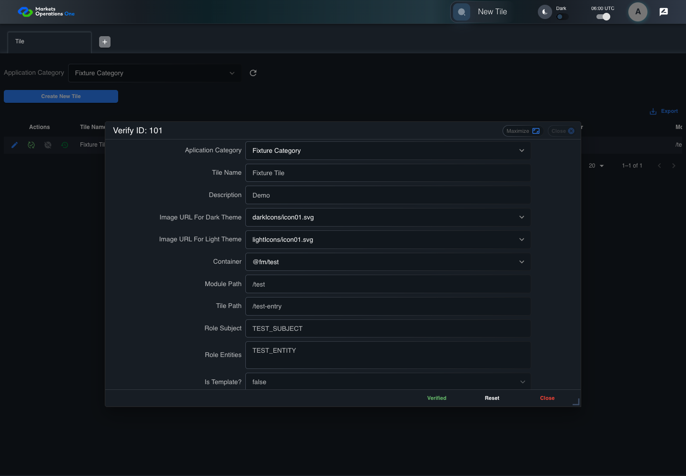

UI-ADM-TIL-008 actual administration UI with step evidence
PASS · application/run-050/ui-adm-til-008-actual-administration-ui-with-step-evidence-ce20ad790326-attempt-1 · ACTUAL_APPLICATION_LOCAL_SERVICES
Actual current React administration screens. Controlled browser login supplies UI-ADMIN-01 and TEST_OWNER, or the declared SUPER_USER. Controlled BFF routes return the case-declared records. Other controlled saves persist submitted field values. This run establishes frontend handling only. It does not execute BFF validation, storage, audit generation, or authorization.
2026-10-22T06:00:05.656Z to 2026-10-22T06:00:09.885Z
Assertions and result · Artifact manifest · Exact run inputs and source hashes
Result SHA-256:dd3e2510b5f15728f2deb67a2e985e652d733aa87608eb63df413d8d97b5512aMachine observations
- ui-origin-admin-requests.json
2c927b065d81aa13fbb480d30faa55ef9fabe1fd662b8cb07d52011099acb737
Screenshot capture: CAPTURED. Named frames: 8.
Step screenshot evidence: COMPLETE. 7/7 canonical steps have execution screenshots.
Canonical step timeline
Given Admin A is authenticated as fixture UI-ADMIN-01 with the case-specific permissions
Execution: PASSED.
1. step-01 Visible state after step 1: Given Admin A is authenticated as fixture UI-ADMIN-01 with the case-specific permissions
2026-10-22T06:00:07.380Z · 1440×1000
Step: /Users/lushevol/code/github/ratan-release-impact/workbench/tasks/ui-test-coverage-20261022/test-cases.md:8865
SHA-256:5b18e61c9d4c5c1f0cee1300bdcda34b1418a25c1a97509d35e55f2dac5d5abcAnd the Tile admin screen is open for UI-ADMIN-01; fixture record 101 is inactive and has Tile Name Fixture Tile; its owner is TEST_OWNER; Application Category Fixture Category is selected
Execution: PASSED.
2. step-02 Visible state after step 2: And the Tile admin screen is open for UI-ADMIN-01; fixture record 101 is inactive and has Tile Name Fixture Tile; its owner is TEST_OWNER; Application Category Fixture Category is selected
2026-10-22T06:00:08.490Z · 1440×1000
Step: /Users/lushevol/code/github/ratan-release-impact/workbench/tasks/ui-test-coverage-20261022/test-cases.md:8866
SHA-256:962e352de8f594547f7682d402b60f979529333c52d5b925f82c36d2dab5d3deWhen Admin A clicks icon button named "Verify" inside row with Record Id "101" in the "Tile" administration data grid
Execution: PASSED.
3. step-03 Visible state after step 3: When Admin A clicks icon button named "Verify" inside row with Record Id "101" in the "Tile" administration data grid
2026-10-22T06:00:08.869Z · 1440×1000
Step: /Users/lushevol/code/github/ratan-release-impact/workbench/tasks/ui-test-coverage-20261022/test-cases.md:8867
SHA-256:b0818d4e60551f05142c7bc0fdc12f1c56d8946b1a84d46239175d23a336e1b7Then textbox named "Tile Name" inside the dialog named "verify ID: 101" inside the "Tile" administration tabpanel is disabled
Execution: PASSED.4. step-04 Visible state after step 4: Then textbox named "Tile Name" inside the dialog named "verify ID: 101" inside the "Tile" administration tabpanel is disabled
2026-10-22T06:00:08.943Z · 1440×1000
Step: /Users/lushevol/code/github/ratan-release-impact/workbench/tasks/ui-test-coverage-20261022/test-cases.md:8868
SHA-256:93eb6977c72d7fd6ba0753d144545eedee014e709f1e9251994c2d6d5c7aee45And button named "Verified" inside the dialog named "verify ID: 101" inside the "Tile" administration tabpanel is visible
Execution: PASSED.5. step-05 Visible state after step 5: And button named "Verified" inside the dialog named "verify ID: 101" inside the "Tile" administration tabpanel is visible
2026-10-22T06:00:09.055Z · 1440×1000
Step: /Users/lushevol/code/github/ratan-release-impact/workbench/tasks/ui-test-coverage-20261022/test-cases.md:8869
SHA-256:8adbb8e08494ce4337994fd24db16dbb302e8f9aa81ff8ab0043aeb69c85a196And button named "Reset" inside the dialog named "verify ID: 101" inside the "Tile" administration tabpanel is visible
Execution: PASSED.
6. step-06 Visible state after step 6: And button named "Reset" inside the dialog named "verify ID: 101" inside the "Tile" administration tabpanel is visible
2026-10-22T06:00:09.162Z · 1440×1000
Step: /Users/lushevol/code/github/ratan-release-impact/workbench/tasks/ui-test-coverage-20261022/test-cases.md:8870
SHA-256:101e188d3fe4191ecff5e52b10343d7680d4ade2325126c0e49073edb7e7621cAnd button named "Close" inside the dialog named "verify ID: 101" inside the "Tile" administration tabpanel is visible
Execution: PASSED.7. step-07 Visible state after step 7: And button named "Close" inside the dialog named "verify ID: 101" inside the "Tile" administration tabpanel is visible
2026-10-22T06:00:09.252Z · 1440×1000
Step: /Users/lushevol/code/github/ratan-release-impact/workbench/tasks/ui-test-coverage-20261022/test-cases.md:8871
SHA-256:09562026ebe60ec6d08ef012dc4ed345d98b3b392e671a4945d064febfe86387
Additional named frames
Screenshots establish visible state only. Assertions and traces support functional claims.